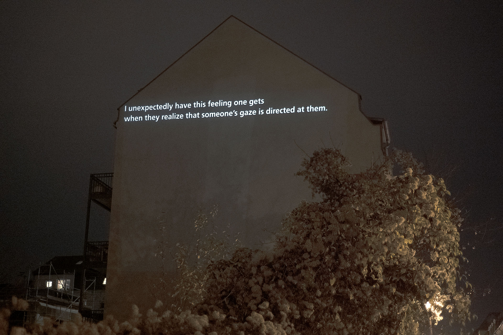
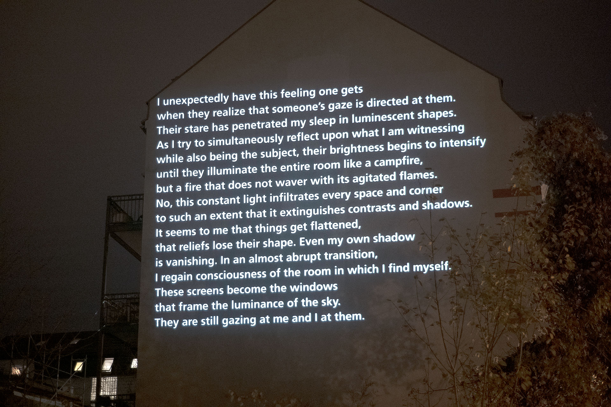
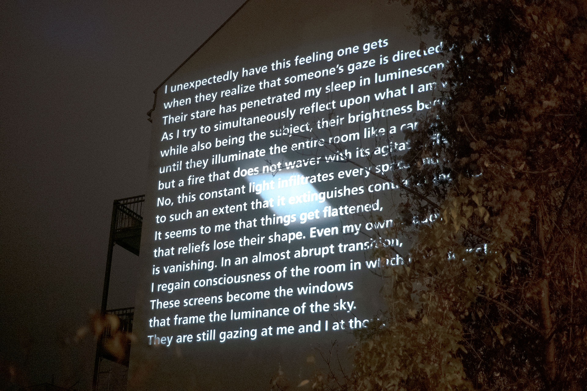
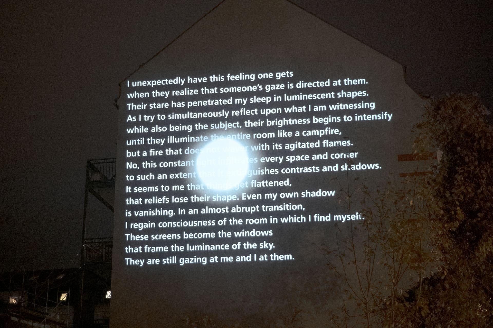
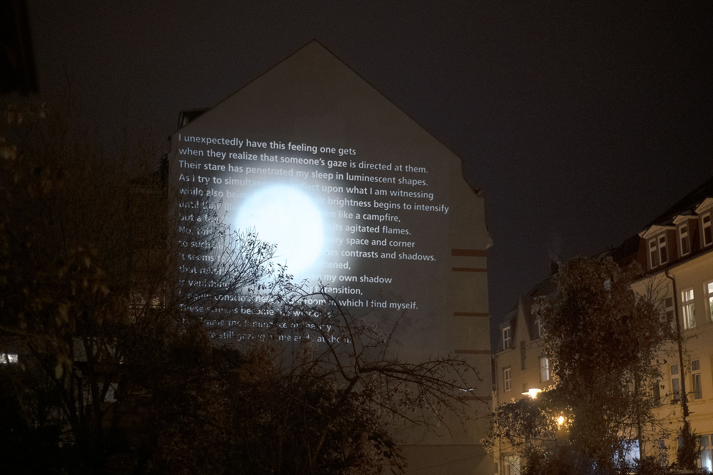

Jessica Arseneau





Sans titre (I unexpectedly have this feeling), 2020, vues d'exposition à Lichtspiele des Westens, Leipzig
La création de cette œuvre a été rendue possible grâce à une bourse de la Kulturstiftung des Freistaates Sachsen.
www.kdfs.de